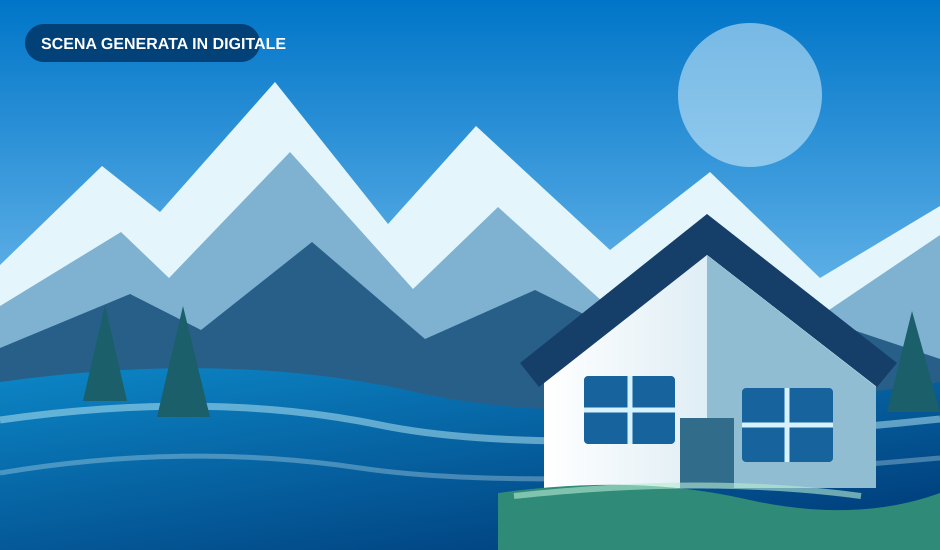
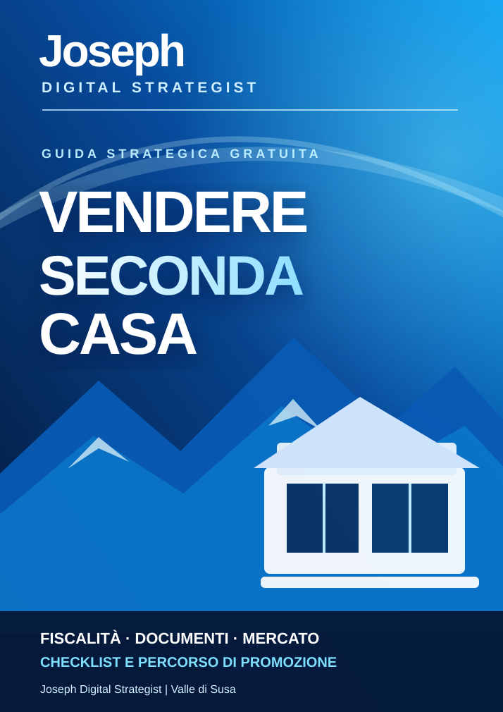

01
Non sai da dove iniziare?
Tempi, costi, documenti e priorità possono rendere incerta la preparazione della vendita.
Una guida pratica ti aiuta a organizzare i primi passi.
Dalla visibilità online alle richieste di informazioni: campagne digitali, landing page, monitoraggio e remarketing nel rispetto della privacy. Manuale con caso dimostrativo, senza promesse di vendita.
Ad Avigliana e negli altri comuni della Valle di Susa, una seconda casa richiede scelte diverse su promozione, costi e pubblico. Parti con informazioni più chiare e scopri come valorizzare il tuo immobile.


Tre difficoltà frequenti quando si mette sul mercato una seconda casa. Ecco come affrontarle in modo più consapevole.
Tempi, costi, documenti e priorità possono rendere incerta la preparazione della vendita.
Una seconda casa può interessare persone con esigenze molto diverse da quelle di una prima abitazione.
Promozione, documentazione, verifiche, incarichi e trattative richiedono responsabilità ben distinte.

Consulta e salva in PDF una guida strategica per orientarti tra fiscalità, documentazione, fasi operative e promozione della seconda casa.
Informazioni generali; valutazioni immobiliari e verifiche tecniche e fiscali sono svolte dai professionisti competenti.
Un processo semplice, con compiti e responsabilità espliciti.
Mi racconti dove si trova l'immobile e quali sono le tue esigenze.
Valutiamo un percorso informativo e di marketing territoriale e digitale.
Le attività riservate alla mediazione sono gestite dagli agenti immobiliari abilitati; le verifiche specialistiche dai professionisti competenti.
Sono Joseph Digital Strategist. Mi occupo di marketing territoriale, comunicazione digitale e analisi del mercato locale per favorire la visibilità degli immobili e l'incontro con persone interessate.
Non svolgo attività di mediazione immobiliare. Gli agenti immobiliari abilitati gestiscono le attività a loro riservate, tra cui incarichi e trattative; gli approfondimenti tecnico-giuridici spettano ai professionisti competenti.
Compila tre campi: prepareremo un messaggio WhatsApp con la tua richiesta. Poi sarai tu a premere Invia in WhatsApp.
Si è aperto WhatsApp: per completare la richiesta, premi Invia nella conversazione. Da questa pagina non possiamo verificare che il messaggio sia stato spedito o ricevuto.
Apri WhatsApp Apri la guida e salva come PDF